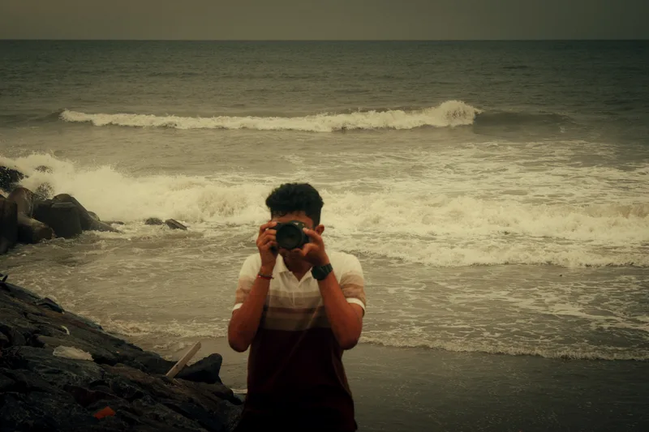

An independent point of view
LAKSHYAJIT
PHOTOGRAPHY
Explore selected work01 / The collections
Different subjects. The same curiosity.
A selection from behind the lens.



02 / The photographer
A CAMERA.
A REASON
TO LOOK.
My dad introduced me to a camera in 2017. I started with our birds at home. In 2021, seeing Sudhir Shivaram’s wildlife photographs brought me back to it — this time with a Canon 50D and a lot of curiosity.
Since then, it’s been friends in front of the lens, cars after dark, and whatever catches my eye along the way. My approach keeps changing. The urge to make photographs stays.
This is my ongoing collection. I’m glad you’re here.
Lakshyajit / LXY Visuals
Follow the work Have a photograph in mind?
LET’S MAKE IT.